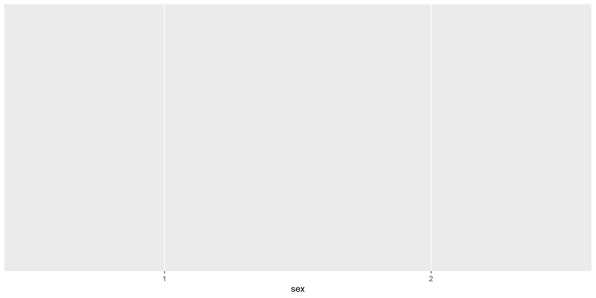
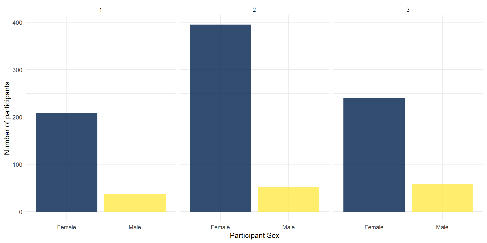
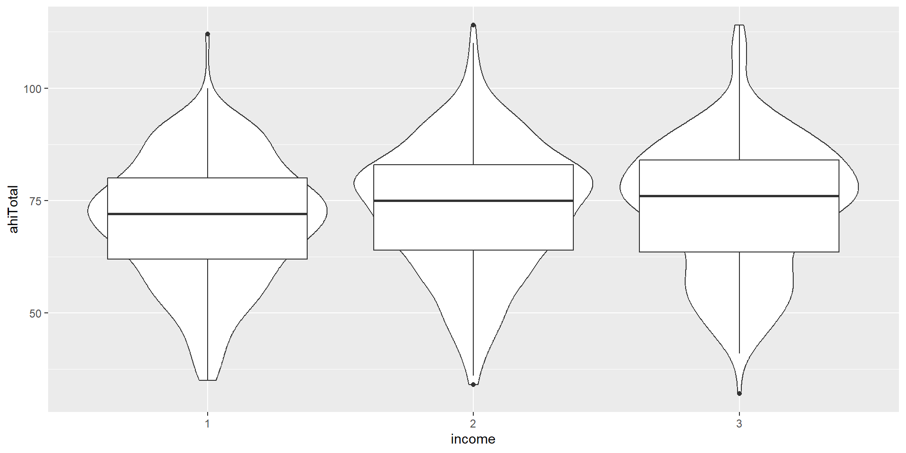

Data Visualization
R Coding Club
RTG 2660
Warm-up
Any problems?
. . .
Imagine you have the following data frame/tibble with animal names, and you want to print to the console the name of the animal and the sound it makes, such as “The dog barks” - but for all animals, one per row. How would you do this?
df <- tibble(
animal = c("dog", "cat", "cow")
)Data Viz
Why should we visualize our data?
check whether data make sense (unusual observations?)
honestly present the data
check whether data fits the assumptions of statistical tests
. . .
It’s fun! (And plots are probably the most important information in papers!)
ggplot
We will use a package called ggplot2 (which is part of the tidyverse). ggplot2 is a very versatile package and allows us to make beautiful, publication ready figures.
The main function to “start” plotting is ggplot() - we will then add layers of data and layers to tweak the appearance.

Activity 1: Set Up
Download
ahi-cesd.csvandparticipant-info.csvinto the folder on your computer for this chapter!Open RStudio and set the working directory to your chapter folder. Ensure the environment is clear.
Open a new R Markdown document and save it in your working directory. Call the file “DataVisualisation1”.
Delete the default R Markdown welcome text and insert a new code chunk.
Load the data into your environment and join the two datasets. Keep only the columns
ahiTotal, cesdTotal, sex, age, educ, income, occasion, elapsed.days.
. . .
library(tidyverse)
dat <- read_csv("Data/ahi-cesd.csv")
pinfo <- read_csv("Data/participant-info.csv")
all_dat <- inner_join(dat,
pinfo,
by= c("id", "intervention"))
summarydata <- select(.data = all_dat,
ahiTotal,
cesdTotal,
sex,
age,
educ,
income,
occasion,
elapsed.days) what happens in the code chunk?
Look at the Data
Have a look at the types of data:
glimpse(summarydata)Rows: 992
Columns: 8
$ ahiTotal <dbl> 32, 34, 34, 35, 36, 37, 38, 38, 38, 38, 39, 40, 41, 41, 4…
$ cesdTotal <dbl> 50, 49, 47, 41, 36, 35, 50, 55, 47, 39, 45, 47, 33, 27, 3…
$ sex <dbl> 1, 1, 1, 1, 1, 1, 2, 1, 2, 2, 1, 2, 1, 2, 2, 1, 1, 1, 1, …
$ age <dbl> 46, 37, 37, 19, 40, 49, 42, 57, 41, 41, 52, 41, 52, 58, 5…
$ educ <dbl> 4, 3, 3, 2, 5, 4, 4, 4, 4, 4, 5, 4, 5, 5, 5, 4, 3, 4, 3, …
$ income <dbl> 3, 2, 2, 1, 2, 1, 1, 2, 1, 1, 2, 1, 3, 2, 2, 3, 2, 2, 2, …
$ occasion <dbl> 5, 2, 3, 0, 5, 0, 2, 2, 2, 4, 4, 0, 4, 0, 1, 4, 0, 5, 4, …
$ elapsed.days <dbl> 182.025139, 14.191806, 33.033831, 0.000000, 202.096887, 0…What do you see?
. . .
All variables are loaded as numeric. However, are all of those numeric?
. . .
sex, educ and income are categories, not numbers per se. We call these variables factors! We need to correct R and convert the data type to factor. Checking and adjusting the data types will be important for plotting and analyzing the data, you might otherwise get strange/wrong results!
How would you convert them to factors?
Activity 2: Transform Data Type
Type and run the below code to change the categories to factors.
You can read each line of the mutate as “overwrite the data that is in that column with the same values now considered factors and not doubles”
So for example, the 1s in
sexchange to categorical factors instead of numerical 1s.Remember if you mutate a new column with the same name as the old one, it will overwrite the column.
summarydata <- summarydata %>%
mutate(sex = as_factor(sex),
educ = as_factor(educ),
income = as_factor(income))
glimpse(summarydata)Rows: 992
Columns: 8
$ ahiTotal <dbl> 32, 34, 34, 35, 36, 37, 38, 38, 38, 38, 39, 40, 41, 41, 4…
$ cesdTotal <dbl> 50, 49, 47, 41, 36, 35, 50, 55, 47, 39, 45, 47, 33, 27, 3…
$ sex <fct> 1, 1, 1, 1, 1, 1, 2, 1, 2, 2, 1, 2, 1, 2, 2, 1, 1, 1, 1, …
$ age <dbl> 46, 37, 37, 19, 40, 49, 42, 57, 41, 41, 52, 41, 52, 58, 5…
$ educ <fct> 4, 3, 3, 2, 5, 4, 4, 4, 4, 4, 5, 4, 5, 5, 5, 4, 3, 4, 3, …
$ income <fct> 3, 2, 2, 1, 2, 1, 1, 2, 1, 1, 2, 1, 3, 2, 2, 3, 2, 2, 2, …
$ occasion <dbl> 5, 2, 3, 0, 5, 0, 2, 2, 2, 4, 4, 0, 4, 0, 1, 4, 0, 5, 4, …
$ elapsed.days <dbl> 182.025139, 14.191806, 33.033831, 0.000000, 202.096887, 0…Activity 3: Barplot
What is a barplot? How does it look like and when would you use it?
. . .
A bar plot is a plot that shows counts of categorical data (factors), where the height of each bar represents the count of that variable.
We will plot male and female participants.
The First Layer
The first line (or layer) sets up the base of the graph: the data to use and the aesthetics (what will go on the x and y axis, how the plot will be grouped).
aes()can take both anxandyargument, however, with a bar plot you are just asking R to count the number of data points in each group so you don’t need to specify this.
ggplot(summarydata, aes(x = sex))
The Second Layer
The next layer adds a geom or a shape, in this case we use geom_bar() as we want to draw a bar plot.
- Note that we are adding layers, using a
+between layers. This is a very important difference between pipes and visualization.
. . .
Adding
fillto the first layer will separate the data into each level of the grouping variable and give it a different colour. In this case, there is a different coloured bar for each level ofsex.We can get rid of the (in this case redundant legend) with
show.legend = FALSE.
The Next Layers - Improving the Plot
We might want to make the plot a bit prettier and easier to read. What would you improve?
. . .
We might want to add better axis labels and change the colors of the bars. We can do so with the functions scale_x_discrete() and scale_y_continuous(), which will adjust the x and y axes.
We will use these two arguments in those functions:
namecontrols/overwrites the axis name (e.g. Groups)labelscontrols the break points on the axis, i.e. what are the conditions called? The order is important here!
ggplot(summarydata, aes(x = sex, fill = sex)) +
geom_bar(show.legend = FALSE) +
scale_x_discrete(name = "Participant Sex",
labels = c("Female", "Male")) +
scale_y_continuous(name = "Number of participants")There’s also the counterparts scale_x_continuous() and scale_y_discrete(). What do you think, why do we use the ones mentioned above and when would we use the other ones?
Themes: Changing the Appearance
There are a number of built-in themes that you can use to change the appearance (background, whether axes are shown etc.), but you can also tweak the themes further manually.
We will now change the default theme to theme_minimal(), but you can also try other themes (just type “theme_” and see what the autocomplete brings up).
Colors
There are various ways to change the colors of the bars. You can manually indicate the colors you want to use but you can also easily use pre-determined color palettes that are already checked for color-blind friendliness.
A popular palette is viridis. We can simply add a function/layer to your ggplot named scale_fill_viridis_d() (d for discrete). The function hast 5 color options (A - E).
- Type and run the below code into a new code chunk. Try changing the option to either A, B, C or D and see which one you like!
Transparency
You can also add transparency to your plot, which can be helpful if you plot several layers of data.
To do so, you can simply add alpha to the geom_bar():
Grouped Plots
Let’s go back to the bar plot (but works similarly for other plots as well): Imagine that you have several factors that you want to use to group your data, such as gender and income. In this case, you could use a grouped bar plot:
Facetting
You could also use facets to divide your data visualizations:
ggplot(summarydata, aes(x = sex, fill = sex)) +
geom_bar(show.legend = FALSE,
alpha = .8) +
scale_x_discrete(name = "Participant Sex",
labels = c("Female", "Male")) +
scale_y_continuous(name = "Number of participants") +
theme_minimal() +
scale_fill_viridis_d(option = "E") +
facet_wrap(~income)
Try to switch sex and income!
Activity 4: The Violin-Boxplot
There are a number of different figure types you can plot with the different geoms, e.g. geom_point(), geom_histogram(), geom_line()…
We now want to plot a form of a boxplot that becomes more popular: The violin-boxplot (which combines- i.e. overlays - the violin plot with a boxplot).
Violin-Boxplot
Let’s look at the code. How does the code differ from the one for the barplot before?
ggplot(summarydata, aes(x = income,
y = ahiTotal,
fill = income)) +
geom_violin(trim = FALSE,
show.legend = FALSE,
alpha = .4) +
geom_boxplot(width = .2,
show.legend = FALSE,
alpha = .7)+
scale_x_discrete(name = "Income",
labels = c("Below Average",
"Average",
"Above Average")) +
scale_y_continuous(name = "Authentic Happiness Inventory Score")+
theme_minimal() +
scale_fill_viridis_d()In this case, not the count on the y-axis, but another cont. variable!
Layer Order
The order of layers is crucial, as the plot will be built up in that order:
ggplot(summarydata, aes(x = income, y = ahiTotal)) +
geom_violin() +
geom_boxplot()
ggplot(summarydata, aes(x = income, y = ahiTotal)) +
geom_boxplot() +
geom_violin() Scatterplot
If we have continuous data of two variables, we often want to make a scatter plot:
Saving your Figures
You can use ggsave() to save your plots. If you don’t tell ggsave() which plot you want to save, by default it will save the last plot you created.
You just have to enter the name of the file to be saved (in your working directory) like this:
ggsave("violin-boxplot.png")Check whether indeed the last plot was saved!
. . .
You can also specify the dimensions of your plot to be saved:
ggsave("violin-boxplot.png",
width = 10,
height = 8,
units = "cm")Saving your Figures 2
You can also assign the plot to an object in your environment (just like we did with the tibbles previously) and then tell ggsave() which object to save. This is a bit safer.
Run the code for the violin-boxplot again and save the plot in an object called viobox. You’d then have to explicitly tell ggsave() to save the object viobox:
viobox <- summarydata %>%
ggplot(aes(x = income,
y = ahiTotal,
fill = income)) +
geom_violin(trim = FALSE,
show.legend = FALSE,
alpha = .4) +
geom_boxplot(width = .2,
show.legend = FALSE,
alpha = .7)+
scale_x_discrete(name = "Income",
labels = c("Below Average",
"Average",
"Above Average")) +
scale_y_continuous(name = "Authentic Happiness Inventory Score")+
theme_minimal() +
scale_fill_viridis_d()
ggsave("violin-boxplot-stored.png", plot = viobox)Do not add ggsave() to the plot with a +. Instead run it on a separate line!
If plot is assigned to object, it won’t be displayed unless you type viobox in the console!
Thanks!
Check out Chapter 13 of QuantFun for further exercises and tips for data visualization!
Also keep in mind: Coding is a lot of googling things!
You can also check out the R Graph Gallery for code for different types of plots.
. . .
Learning objectives
Know how to transform (pivot) and join data
Understand the basics of a ggplot (layers etc.)
Be able to make your first own plots, such as bar charts, violin + boxplots, scatterplots
Know what a grouped plot and a facetted plot is
. . .
Next:
- ? (More data wrangling? Data viz?)
- Should we make a plot with real data from one of you?
- When? 19th -> defense, 26th -> easter break… Wednesday, 20th?
General Question:
Online?
Is this ~every other week fine?